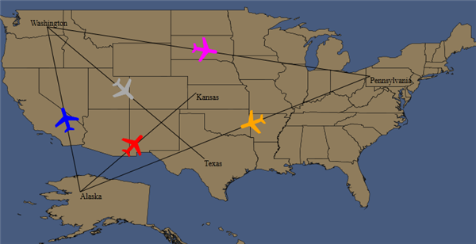

|
Name |
Data Type |
|
Points* |
ObservableCollection<Point> |
|
Label |
String |
|
Color |
Brush |
|
LabelColor |
Brush |
|
LabelPosition** |
PathLabelPosition |
|
LabelPoint** |
Point |
|
FontFamily |
FontFamily |
|
FontSize |
Double |
|
FontStyle |
FontStyle |
Note:
· Properties marked with * are mandatory.
· Properties marked with ** are mandatory when label is set.
To create a collection class
|
[C#] namespace SampleBrowser {
using System; using System.Net; using System.Windows; using System.Windows.Controls; using System.Windows.Documents; using System.Windows.Ink; using System.Windows.Input; using System.Windows.Media; using System.Windows.Media.Animation; using System.Windows.Shapes; using System.Collections.ObjectModel;
public class PathCollection : ObservableCollection<MapsPath> { MapsPath mpath; public PathCollection() { mpath = new MapsPath(); mpath.Points = new ObservableCollection<Point>(); mpath.Points.Add(new Point(-119, 47)); mpath.Points.Add(new Point(-115, 27)); mpath.LabelPoint = mpath.Points[0]; mpath.Label = string.Empty; this.Add(mpath);
mpath = new MapsPath(); mpath.Points = new ObservableCollection<Point>(); mpath.Points.Add(new Point(-119, 47)); mpath.Points.Add(new Point(-80, 41)); mpath.LabelPoint = mpath.Points[0]; mpath.Label = string.Empty; this.Add(mpath);
mpath = new MapsPath(); mpath.Points = new ObservableCollection<Point>(); mpath.Points.Add(new Point(-115, 27)); mpath.Points.Add(new Point(-80, 41)); mpath.LabelPoint = mpath.Points[0]; mpath.Label = string.Empty; this.Add(mpath);
mpath = new MapsPath(); mpath.Points = new ObservableCollection<Point>(); mpath.Points.Add(new Point(-101, 39)); mpath.Points.Add(new Point(-115, 27)); mpath.LabelPoint = mpath.Points[0]; mpath.Label = string.Empty; this.Add(mpath);
mpath = new MapsPath(); mpath.Points = new ObservableCollection<Point>(); mpath.Points.Add(new Point(-119, 47)); mpath.Points.Add(new Point(-100, 31)); mpath.LabelPoint = mpath.Points[0]; mpath.Label = string.Empty; this.Add(mpath);
mpath = new MapsPath(); mpath.Points = new ObservableCollection<Point>(); mpath.Points.Add(new Point(0, 0)); mpath.Points.Add(new Point(0, 0)); mpath.LabelPoint = mpath.Points[0]; mpath.Label = string.Empty; this.Add(mpath);
mpath = new MapsPath(); mpath.Points = new ObservableCollection<Point>(); mpath.Points.Add(new Point(0, 0)); mpath.Points.Add(new Point(0, 0)); mpath.LabelPoint = mpath.Points[0]; mpath.Label = string.Empty; this.Add(mpath);
mpath = new MapsPath(); mpath.Points = new ObservableCollection<Point>(); mpath.Points.Add(new Point(0, 0)); mpath.Points.Add(new Point(0, 0)); mpath.LabelPoint = mpath.Points[0]; mpath.Label = string.Empty; this.Add(mpath); }
} public class MapsPath { public ObservableCollection<Point> Points { get; set; } public Point LabelPoint { get; set; } public string Label { get; set; } } } |
Add the Following code in Resource Dictionary
|
[XAML] <!-- Local Refers the Namespace of the Project. "xmlns:local="clr-namespace: SampleBrowser" -->
<local:PathCollection x:Key="pc"/> |
|
[XAML] <!--syncfusion refers : xmlns:syncfusion="http://schemas.syncfusion.com/wpf" --> <syncfusion:MapControl ShapeFill="#8f7c5c" Name="Map" LayeredContent="{Binding ElementName=shapeLayer}" > <syncfusion:MapControl.Layers> <syncfusion:Layers> <syncfusion:ShapeFileLayer PathSource=”{Binding Source={StaticResource pc}}” Uri="Maps.ShapeFiles.states.shp" x:Name="shapeLayer"/> </syncfusion:Layers> </syncfusion:MapControl.Layers> </syncfusion:MapControl> |
|
[C#] // Create a Instance for PathCollection class PathCollection pathCollection = new PathCollection();
// Assign the object as Path Source of the Shape File Layer this.shapeLayer.PathSource = pathCollection;
|
